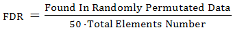

Meta-analysis
The aim of a meta-analysis is to identify up- and down-regulated genes from different independent microarray experiments.
Such a meta-analysis is based on the hypergeometric analysis method.
Within the framework of a meta-analysis, a hypergeometric analysis is applied to
sets of gene profiles. The obtained results are the initial data for a subsequent meta-analysis.
It uses the same procedure as a hypergeometric analysis for testing the hypothesis
that the that score obtained in previous tests deviates from 0
(Boundary Value = 0) just by chance. The result is a table with
meta scores that indicate.
Parameters:
-
Tables - tables from the input data collection to be used for the meta analysis
Note: for proper work tables should have only one column with scores
obtained by Hypergeometric analysis (without fold change, details or annotations).
- Output type - the type of genes to be included in result:
- Up- and down-regulated
- Up-regulated
- Down-regulated
- P-value threshold - threshold for P-value (only elements with lower P-value will be included in the results).
-
Calculate FDR - the test method for calculation of False Discovery Rate (FDR) -
an average rate of mistakenly found up- or down-regulated genes under the given P-value threshold. It randomly permutates the data 50 times and applies the selected
meta-analysis to each randomized table. FDR is calculated separately for up- and down-regulated
genes according to the formula:

-
Output table - the path in the BioUML repository where the result table will be stored.
If a table with the specified path already exists it will be replaced.